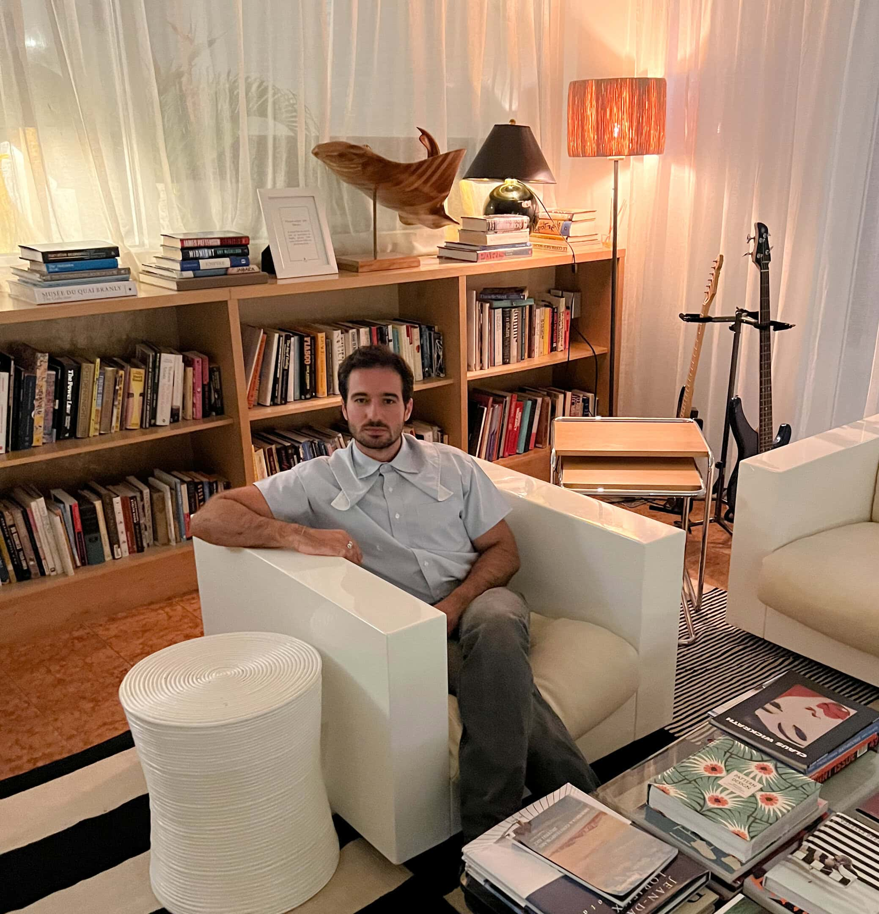

is a writer, critic, and curator based in Miami. His work explores contemporary art, aesthetics, and cultural theory, with a focus on emerging artists and new media practices.
His work has been featured in [magazines, galleries, exhibitions]. In addition to writing, he works as a curator for supermarket, where he organizes exhibitions and collaborates with artists across Miami.
